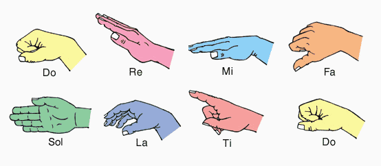
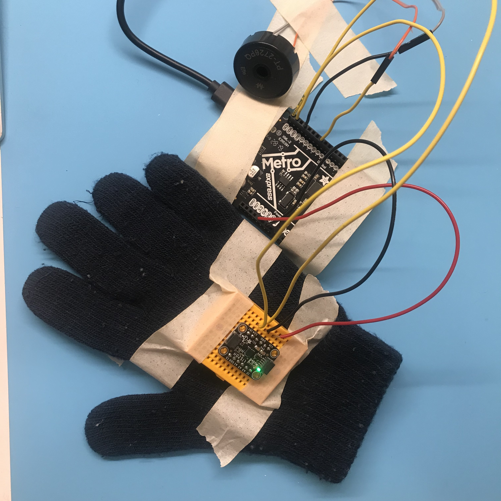

Week 07: Electronic Output Devices
Close Encounters
This week I was inspired by the classic movie Close Encounters of the Third Kind. I wanted to reproduce the five-tone sequence that the aliens use to communicate with the humans in the film, using my accelerometer as the input device and the piezo buzzer as the output device. The five-tone sequence is D5 - E5 - C5 - C4 - G4 or RE - MI - DO - DO - SO in solfege.
Solfege Hand Signs
TFT Display
In labs we learned how to set up the TFT Display. I decided to continue with this as my output device, displaying positional information from the accelerometer. My plan is to attach the accelerometer to a glove and have the TFT display indicate solfege based on the position of my hand (the accelerometer). If I can do this, then I’ll also try and add a piezo buzzer with the goal of playing the 5-tone sequence from Close Encounters of the Third Kind. I was really inspired by this tone sequence actually, and realized that the solfege equivalents of the tones could be distinct enough for an accelerometer to read. We’ll see.
I started with my TFT Display wiring set up (see notes from Slack). And I worked through some of the tutorials on the adafruit site to get comfortable with programming the TFT to display things other than the demo. I took the code from the TFT set up demo and cleaned it up, removing all the commented out lines for other TFT displays. Because I really wanted to spend time getting the microcontroller to read the inputs from the accelerometer to produce a basic text output on the TFT, I didn’t get too involved in all the options a TFT Display can provide.
I got the TFT display to read “Do” “Re” and “Mi” by modifying the demo code.
void loop() {
tft.fillScreen(ST77XX_BLACK);
testdrawtext("DO", ST77XX_GREEN);
delay(4000);
tft.fillScreen(ST77XX_BLACK);
testdrawtext("RE", ST77XX_YELLOW);
delay(4000);
tft.fillScreen(ST77XX_BLACK);
testdrawtext("MI", ST77XX_MAGENTA);
delay(4000);
Serial.println("done");
delay(1000);
}
Next I moved on to the accelerometer to figure out what the input data would be to produce the right outputs.
Accelerometer
I wired up my accelerometer the way I had set it up for that silly calibration test, except this time the breadboard is attached to the back of a glove. I used my code from the previous week as well to get a sense of the different x, y, and z values for each solfege positions: do, re, mi, and so. I also needed to come up with a way to distinguish low do from high do, as well as to figure out a way to distinguish do and re, which conventionally would have the same planar coordinates.
After collecting some data, I made the following determinations for x,y,z values/ranges:
when Z > 9 and x < 1 and y < 1, print “DO - low”
when Z > 9 and x > 1 and y > 1 print “DO-high”
when z < 9 and X < 1 and y > 1 print “RE”
when Z < 9 and X > 4 and Y > 1 print “MI”
when Z < 1 and X < 1 and Y > 8 print “SO”
Using if...else functions, I set the Serial Monitor to print the appropriate solfege term when the above conditions were met. At first, it seemed to work, except that "RE" popped up more often than it should have. Also, "SO" was just not happening. I tweaked the values so they were narrower, but this didn't seem to help. I ended up abandoning my attempts at capturing actual solfege hand signs that relied upon 3 different variables, and instead wrote code that measured extreme hand positions and needed only one variable to make an output determination. The variable in question would equal measure of gravity 9.6m/s2. To account for error, I made each variable greater than +8 or less than -8. I also added in a position that would be guaranteed to be silent.
flat hand = DO high = Z > 8
hand pointed upward = MI = X > 8
hand sideways, palm in = SO = Y > 8
hand sideways, palm out = DO low = Y < -8
hand pointed downward = RE = X < -8
palm up = rest (silence) = Z < -8
I then attempted to combine my accelerometer code and my TFT code by copy and pasting, and inputing my TFT display preferences into my if...else if statements. Unfortunately, my TFT display wouldn't turn on, and I was getting lost in the code. I decided that I would need to spend more time than I had this week on figuring out how to make the code pieces play nice, and so I decided to incorporate the piezo buzzer and leave the TFT display behind.
Piezo Buzzer
Using the piezo buzzer as an output device for the accelerometer proved to be very simple. I pulled the basic piezo buzzer code with the tone() function off of the class website's piezo buzzer page, and pasted it into my accelerometer code. I used this guide to musical note frequencies (also from our class site) to find the appropriate Hz values for each tone in the sequence:
DO high = c5 = 523.25
DO low = c4 = 261.63
RE = d5 = 587.33
MI = e5 = 659.25
SO = g4 = 392.00
MAGIC
#include
#include
#include
#include
#define LIS3DH_CS 10
int buzzerPin = 10;
Adafruit_LIS3DH lis = Adafruit_LIS3DH();
void setup(void) {
pinMode(buzzerPin, OUTPUT);
Serial.begin(115200);
}
}
void loop() {
sensors_event_t event;
lis.getEvent(&event);
// if hand is flat
if (event.acceleration.z > 8) {
tone(buzzerPin, 523.25, 500);
Serial.print("DO HIGH");
}
//if hand is pointed upward
else if (event.acceleration.x > 8) {
tone(buzzerPin, 659.25, 500);
Serial.print("MI");
}
// if hand is sideways, palm in
else if (event.acceleration.y > 8) {
tone(buzzerPin, 392.00, 500);
Serial.print("SO");
}
//if hand is sideways palm out
else if (event.acceleration.y < -8) {
tone(buzzerPin, 261.63, 500);
Serial.print("DO low");
}
//if hand is pointed downward
else if (event.acceleration.x < -8) {
tone(buzzerPin, 587.33, 500);
Serial.print("RE");
}
// if palm is up
else if (event.acceleration.z <-8) {
tone(buzzerPin, 0, 500);
Serial.print("rest");
}
Serial.println();
delay(2000);
}